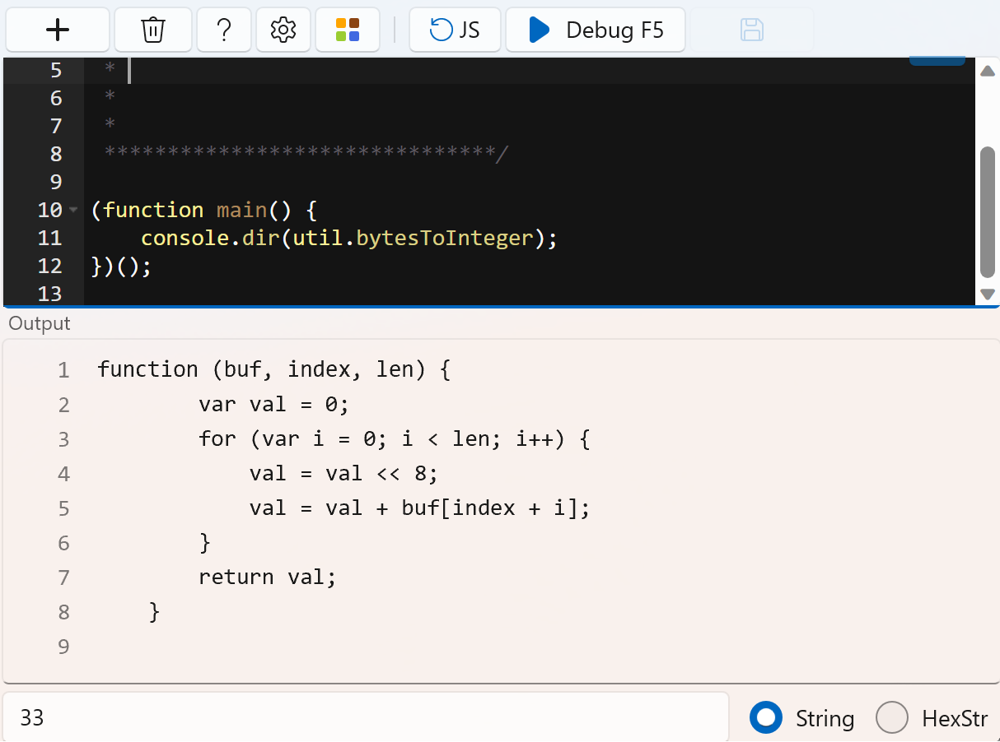

js脚本示例
1. 解析通讯协议并绘制曲线
(function main() {
var str = receive.getString(); // 读取接收到的字符串
receive.write(str); // 输出到接收窗口
receive.write(" -> ", "red"); // 输出箭头
var buf = util.hexStringToBytes(str); // 将接收到的十六进制字符串转换为数组。
var val1 = util.bytesToInteger(buf, 7, 2); // val1 按索引和长度将数组转为整数
var val2 = util.bytesToInteger(buf, 9, 2); // val2
receive.write('val1=' + val1 + " ", "LawnGreen"); //输出转换后的数值
receive.write('val2=' + val2, "yellow");
receive.write("\r\n"); //Print line breaks for easy observation.
chart.write("val1=" + val1 + "\n"); // 绘制到波形界面。 名字是val1
chart.write("val2=" + val2 + "\n"); // 绘制到波形界面。 名字是val2
})();

2. 获取时间字符串
// Format 10:48:59.671 h:m:s.ms
function timeToString() {
let d = new Date();
let h = d.getHours().toString().padStart(2, '0');
let m = d.getMinutes().toString().padStart(2, '0');
let s = d.getSeconds().toString().padStart(2, '0');
let ms = d.getMilliseconds().toString().padStart(3, '0');
return h + ":" + m + ":" + s + "." + ms;
}
3. 十六进制字符串转位十进制
/********************************
*
* Notes: 十六进制字符串转换为十进制
*
*
*
*
*******************************/
{
let str = receive.getString(); //读取接收到的字符串
receive.write(str); //输出到接收窗口
receive.write(" -> ", "DarkOrange"); //输出箭头
let buf = util.hexStringToBytes(str); //转为字节数组
let val = util.bytesToInteger(buf, 0, 2); // 转为 int16;
console.log(val); //打印到输出窗口
receive.write(val.toString(), "DarkOrange"); //输出转换后的数值
}
4. 整数转为字符串
val = 10;
let str1 = val.toString(); //转十进制字符串 '10'
let str2 = val.toString(16); //转十六进制字符串 'a'
let str3 = val.toString(8); //转八进制字符串 '12'
let str4 = val.toString(2); //转二进制字符串 '1010'
let str5 = val.toString(2).padStart(8, '0'); //转二进制字符串不足8位填充0 '00001010'
5. 打印函数源码
(function main() {
console.dir(util.bytesToInteger);
})();
